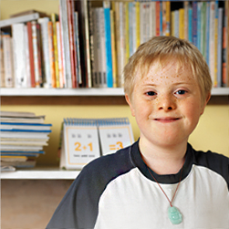

Para o modelo médico da deficiência ser aplicado, era preciso a atuação de uma equipe multidisciplinar, que trabalhasse com os médicos para “recuperar” os pacientes. São criados, então, cursos de Fisioterapia, Terapia Ocupacional e Fonoaudiologia aqui no Brasil. Esse pode ser considerado outro significativo ganho advindo do modelo médico da Deficiência.
A proposta da profissão de fonoaudiólogo vem da década de 30 e partiu da preocupação de médicos e professores com a correção de erros de linguagem dos alunos.
 Erros de linguagem dos alunosEm 1951 foi criado, na Universidade de São Paulo, o primeiro curso técnico de Fisioterapia, com duração de 1 ano.